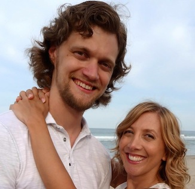

Ryan & Tara's Wedding
November 22nd, 2014 @ 4:30PM
The Lake House730 Terrace Point Dr
Muskegon, MI 49440
RSVP
November 22nd, 2014 @ 4:30PM
The Lake House
The youngest of three children, Tara quickly learned to hold her own with much older and larger siblings and cousins. She accomplished this by developing an somewhat obnoxious sarcastic sensibility. Tara is an advocate of women’s and animal rights and hopes to raise her children with a passion for activism. She has a Sarah Silverman-like sense of humor and enjoys making Simpsons and Seinfeld references in everyday conversation. A former psychology major, Tara gave up her dreams of becoming a tenured psychobioogy professor to begin raising a family. With her she brings two amazing children into this family from a previous marriage; Nicholas and Samantha.

A dashing young cosmopolitan from West Michigan. He has a propensity for imitating voices, training canines and children, brainstorming great brand names, and writing clean code. After a brief parlay at Michigan State University, Ryan left to join the airforce and serve his country as a Chinese Mandarin linguist. Along the way, Ryan became a father to two amazing girls, Isabelle and Amelia who have enriched his life more than he ever thought possible.

In October 2009, Tara began a new employment venture at the National Geospatial Intelligence Agency. Tara arrived to find her teammate Ryan, who was vastly more knowledgeable about proper code development and who had no idea she had been hired. Ryan arrived to find an unexpected new ‘supervisor’ who was also sporting a black eye at the time. After flirting outrageously with him for a few weeks, Tara was thrilled when Ryan finally asked her out to a work function in DC on October 30th. After a relatively uneventful Thai dinner, Tara basically threw herself at Ryan and the rest is history.

In October 2009, Tara began a new employment venture at the National Geospatial Intelligence Agency. Tara arrived to find her teammate Ryan, who was vastly more knowledgeable about proper code development. Ryan arrived to find an unexpected new ‘supervisor’ who was also sporting a black eye at the time. After flirting outrageously with him for a few weeks, Tara was thrilled when Ryan finally asked her out to a work function in DC on October 30th. The next day the two new friends took their four children out trick or treating together. They moved in together as one big happy family about a year and a half later. In 2014, the family welcomed their newest member, Cross.